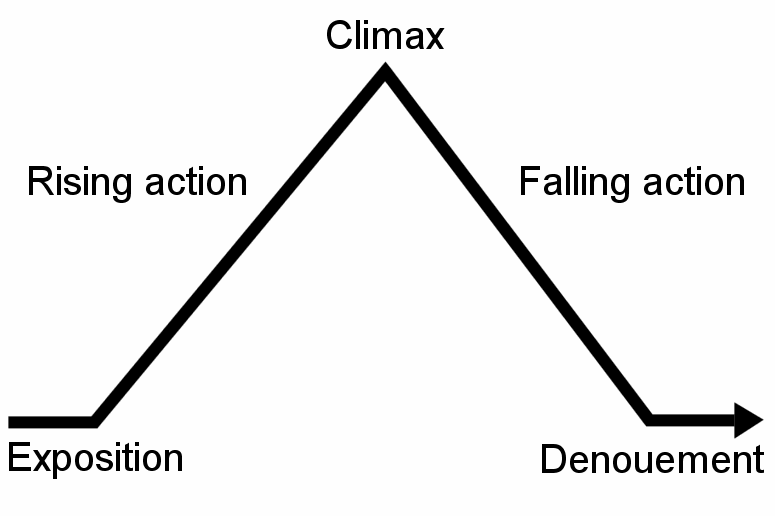

How to Tell a Story
Contents
Overview
In the animation industry, Story is king. Pixar has been known to spend up to three years of development time on story alone, and they also continue to refine it through the rest of production. Creating an animated film is a huge investment in time and money, so studios put particular emphasis on the "measure twice, cut once" philosophy. In this part of the course, we will dissect the components that go into crafting an effective story, explore methods for developing an artistic style, and finally show you how to approach further refining your newly created story concept.
The Story Skeleton: Doing your Research
There are many ways to tell a story. That being said, most stories tend to follow similar structures. For a start, all stories obviously have a beginning, middle, and an end. Further, most follow what is known as Freytag's Pyramid.
The key here is that there is a series of events leading up to the pivotal climax, and then there are another series of events that make up the conflict that follows. The rising action and falling action can take many forms, but tend to fall into a few archetypical "curves", as the famous author Kurt Vonnegut explains in the video below.
To say that one curve or another is superior is not only wrong, but it takes away from the artistic potential. Stories would be boring if they were all structured the same way. The key is to find an effective story, and then build the structure around it. Find the feelings and emotions you want to convey, and figure out the best way structure the story in order to convey that. Andrew Stanton, the director and writer of both Wall-E and Finding Nemo, gives a fantastic Ted talk where he discusses what he personally looks for in a story:
Thinking about your Art Style
Great artists steal. The best way for you to find inspiration for the look and feel of your animated story is to seek inspiration from other visual media. It can be good practice to find frames, pictures, and images that strike you and putting them in what is called a moodboard. A moodboard is basically a collage of visual elements that inspire you, and the final "look" of your story.
Assignment
Your first assignment is to create a story pitch for an animated short. The story should be able to be conveyed visually somewhere between 30 seconds and 2 minutes.
Examples
Here are some examples of story pitches that students have submitted in the past:
References